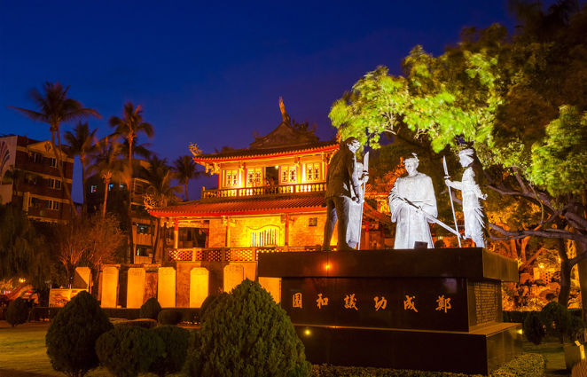

古蹟導覽
請點選以下圖片

赤崁樓原為荷蘭人所建。早期的漢人稱荷蘭人為紅毛，所以也把它稱做紅毛樓。
初建於西元1652年，由荷蘭人自海外運送建材所造，稱為普羅民遮城，然而真正的普羅民遮城其實在清代就已傾毀，我們現在看到的赤崁樓是由海神廟、文昌閣、部分普羅民遮城殘跡組成。
目前赤崁樓中的「海神廟」是為感謝海神庇佑所興建，現懸以「赤崁樓」門匾，內部有鄭成功畫像、赤崁樓之相關文物展示、古代各式船隻模型及台江滄海圖，而「文昌閣」是一樓為文物陳列室，二樓為供奉魁星爺，相傳魁星爺掌管文昌府事與人間文運祿籍，為昔日科舉時代的神祇，因此許多考生會至此祈求能夠金榜題名。
在赤崁樓裡擁有廣闊的庭園，可供旅客散步以外，在閒暇散步之於時不妨細細品味園區古早的文化遺跡，不只能增廣見聞更能一窺古時的奧妙。" width="618" height="400">
赤崁樓原為荷蘭人所建。早期的漢人稱荷蘭人為紅毛，所以也把它稱做紅毛樓。
初建於西元1652年，由荷蘭人自海外運送建材所造，稱為普羅民遮城，然而真正的普羅民遮城其實在清代就已傾毀，我們現在看到的赤崁樓是由海神廟、文昌閣、部分普羅民遮城殘跡組成。
目前赤崁樓中的「海神廟」是為感謝海神庇佑所興建，現懸以「赤崁樓」門匾，內部有鄭成功畫像、赤崁樓之相關文物展示、古代各式船隻模型及台江滄海圖，而「文昌閣」是一樓為文物陳列室，二樓為供奉魁星爺，相傳魁星爺掌管文昌府事與人間文運祿籍，為昔日科舉時代的神祇，因此許多考生會至此祈求能夠金榜題名。
在赤崁樓裡擁有廣闊的庭園，可供旅客散步以外，在閒暇散步之於時不妨細細品味園區古早的文化遺跡，不只能增廣見聞更能一窺古時的奧妙。" width="618" height="400">
二鯤鯓為早前台江西岸的沙洲島名，昔日的安平古堡位於一鯤身，而億載金城則位在二鯤身。不過隨著時間的推進使得港口淤積，因此沙洲也就慢慢的連在一起。隨著離海漸遠，億載金城已失去軍事據點的作用，慢慢轉型為熱門的旅遊景點。
城內有沈葆禎的紀念銅像，還有供人參觀的砲台，如果您在三-四月時造訪，還能觀賞到周邊黃花風鈴木盛開的絕美，可以去當地租借天鵝船，在護城河中沿路觀賞空前絕後的美景，沿路還能與生活於此的野鴨及天鵝一同在水池裡嬉戲。" width="618" height="400">
清領時期一度是全台童生入學之所，即為「全臺首學」的由來。建築內部莊嚴宏偉，氣勢磅礡，保有著「左學右廟」、「前殿後閣」的傳統格局，左學是明倫堂為主的建築群，右廟則是以大成殿為中心。園內設有文昌閣，為古時候的藏書塔，是孔廟建築群中唯一的塔狀建築物，作為台灣府學的藏書處，是文人雅士消磨時光的休閒好去處，能沉浸在書香四溢的環境裡。
如果有機會還能在每年的9月28日看到孔廟獨特的祭孔大典，一起來追念偉大的至聖先師孔子。" width="618" height="400">
×